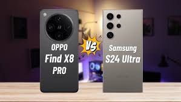
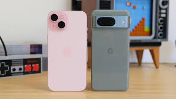
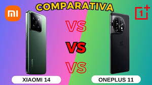

Oppo Find X8 Pro vs Samsung Galaxy S24
Especificaciones:
- Oppo Find X8 Pro: Cámara de 50 MP, Snapdragon 8 Gen 3, Pantalla AMOLED 120Hz.
- Samsung Galaxy S24: Cámara de 200 MP, Exynos 2400, Pantalla Dynamic AMOLED 120Hz.
Conclusión: El Samsung Galaxy S24 destaca en fotografía con su cámara de 200 MP, mientras que el Oppo Find X8 Pro ofrece un diseño más liviano y rápido.

iPhone 15 vs Google Pixel 8
Especificaciones:
- iPhone 15: Chip A17 Bionic, Pantalla Super Retina XDR, Sistema de triple cámara.
- Google Pixel 8: Tensor G3, Pantalla OLED 120Hz, Cámara computacional mejorada.
Conclusión: El iPhone 15 es ideal para quienes buscan un ecosistema fluido, mientras que el Pixel 8 es el rey de la fotografía computacional.

Xiaomi 14 Pro vs OnePlus 11
Especificaciones:
- Xiaomi 14 Pro: Snapdragon 8 Gen 3, Cámara Leica 50 MP, Batería de 5000 mAh.
- OnePlus 11: Snapdragon 8 Gen 2, Cámara Hasselblad 48 MP, Carga rápida de 100W.
Conclusión: El Xiaomi 14 Pro ofrece una experiencia premium en cámaras, mientras que el OnePlus 11 es excelente en relación calidad-precio.